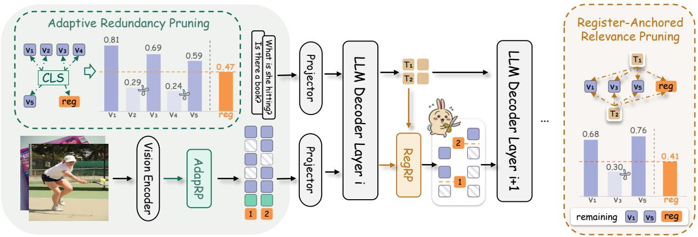

(c) Adaptive token budget Figure 1 Motivation for relative comparison(c) Adaptive token budget Figure 1 Motivation for relative comparison. (a) Register insertion suppresses attention sinks, yielding a less sink-dominated CLS→vision attention distribution and increasing $n _ { \mathrm { e f f } }$ from 42 to 281. (b) A fixed top-K cutoff corresponds to different evidence levels across samples, while relative cutoffs adapt to distributional variation. (c) OccamToken produces sample-adaptive token budgets through two-stage register-anchored pruning.这张图/表用于判断 OccamToken 的实验收益来自哪里。重点看替换、消融或跨模型设置下趋势是否一致，而不是只看单个最高分。

Figureure 3 · Overview of OccamTokenFigure 3 Overview of OccamToken. Given an input image and a text query, our framework performs two-stage adaptive visual token pruning. Stage I AdapRP (Adaptive Redundancy Pruning): At the vision encoder output, a test-time register token absorbs attention sinks. The [CLS] token scores all visual tokens and the register token jointly; tokens scoring below $\lambda _ { 1 } \cdot s _ { 1 } ( r )$ are pruned, yielding an image-adaptive token budget. Stage II RegRP (Register-Anchored Relevance Pruning): Within the LLM, text tokens score the surviving visual tokens via max attention, while the register token’s mean text attention serves as a dynamic threshold. Tokens scoring below $\lambda _ { 2 } \cdot s _ { 2 } ( r )$ are removed, producing a query-adaptive final budget.这张图概括 OccamToken 的整体方法流程。阅读时先看模块之间传递的训练信号，再看作者如何把目标拆成可优化的子问题。